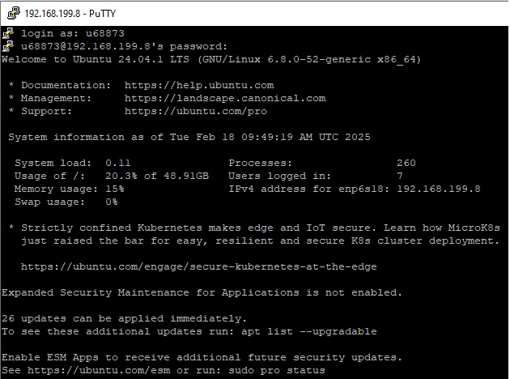
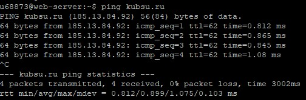
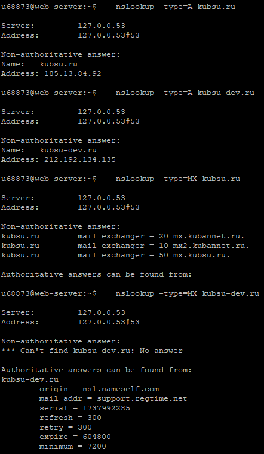
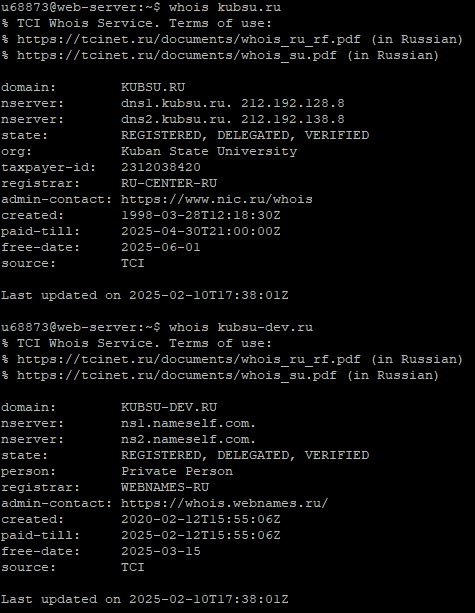
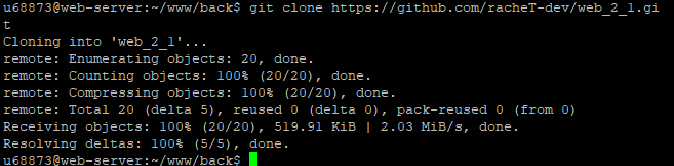
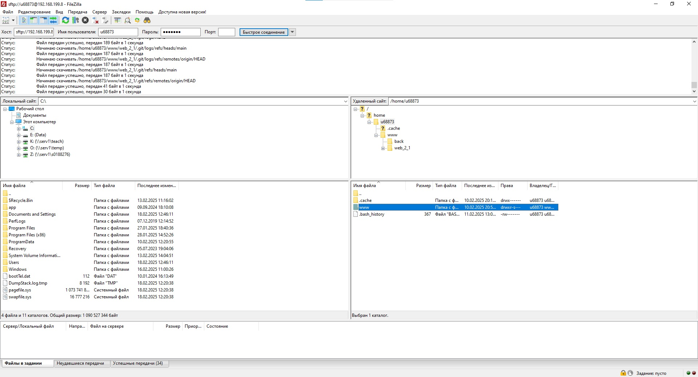
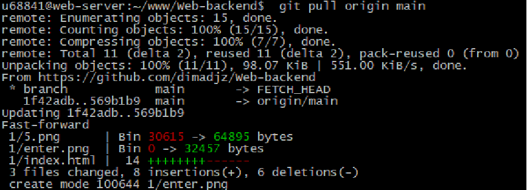

<!DOCTYPE html>
<html lang="en">
<head>
    <meta charset="UTF-8">
    <meta name="viewport" content="width=device-width, initial-scale=1.0">
    <title>Document</title>
</head>
<body>
    <p>Подключение к учебному серверу по SSH с помощью клиента Putty </p>
    
    <p> С помощью команды ping на учебном сервере узнаю IP-адрес веб-сервера kubsu.ru</p>
    
    <p>С помощью команды nslookup узнаю A-записи и MX-записи домена kubsu.ru и kubsu-dev.ru</p>
    
    <p>С помощью команды whois узнаю дату регистрации домена kubsu.ru и kubsudev.ru</p>
    
     <p>При помощи команды "git clone" клонирую репозиторий на учебный сервер и командой ls отображаю содержимое директории</p>
    
    <p>С помощью программы FileZilla соединяюсь с учебным сервером с моим логином и паролем по протоколу SFTP и копирую на
локальный компьютер файлы задания из каталога www</p>
    
    <p>Командой 'git pull' добавляю изменения с гитхаба на сервер</p>
    
</body>
</html>
